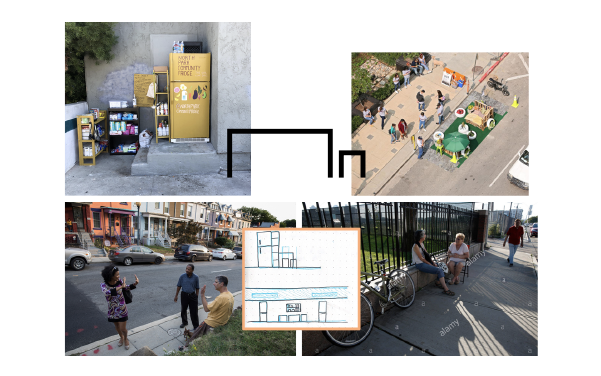
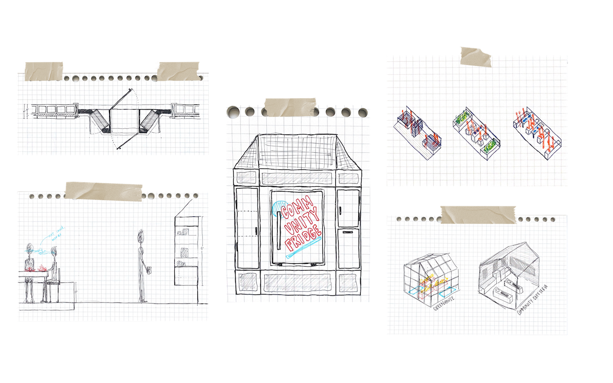
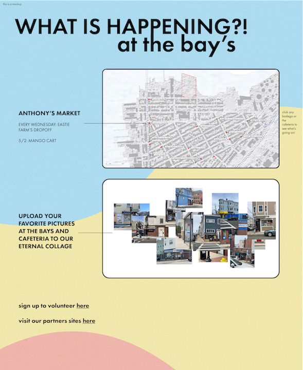

Institutionalized racism effects the well-being of minority groups every day. This manifests itself in issues regarding income, housing, energy insecurity, health care, and food insecurity. When systemic barriers overlap, you are left with generational poverty. With the COVID-19 Pandemic highlighting and exacerbating these issues, it is important to recognize and tackle these problems now. In East Boston, Latinx peoples have the highest rate of food insecurity of the different races/ethnicities studied and 59% of the EBHNC study participants lived in food-insecure households. While community cannot solve these issues, promoting a foundation of mutual aid in these under-served communities can help to support mental health and strengthen the neighborly bonds that we need to survive. Mutual Aid is described as “solidarity, not charity” and allows for communities to create sustainable networks to invest in themselves. The pandemic has garnerated a robust response to food insecurity but the current systems rely on flimsy infrastructure and do not have dedicated spaces beyond parking lots and community center rooms. So how can we reinterpret these historically charity-based models to embrace the concept of mutual aid? Mutual aid networks like the Young Lords Garbage Offensive and the Black Panthers Breakfast Program, are examples of a community’s ability to stand up to lack of physical infrastructure with social infrastructure. These networks existed as programming and rarely had physical spaces dedicated to public meeting. This is the same for most of the community work done by stakeholders NUBE, Eastie Farms, Cosecha, and Empower East Boston. Spacial installations are usually fold-up tables that don’t provide stability or create meaningful infrastructure. The residents of East Boston are separated from their community infrastructure and to change this I propose reclaiming empty lots to create community land, like the precedent of Eastie Farms. This would give residents the foundation of space and ownership to then build their relationships and mutual aid network. This would happen in the Eagle Hill and Orient Heights communities as these are the most at risk. The main water front site will house the Community Cafeteria while the more scalar installations will populate the city's streets. Residents will be able to use these spaces to tend to their existing neighborly/communal interactions and build a sustainable mutual aid network.
My stakeholder map highlights the important players in my project. The community centers and food-based organizations will play a large part on the main site, but the smaller installations will depend in large part, on the community and the corner stores/business owners. It is an interconnected network of many moving parts. We as designers, need to be mindful and try to understand each of these parts intimately. And rather than implement separate and unrelatable installations, propose infrastructure to bolster and support the existing economy and mutual aid relationship buds that are beginning to sprout in this new era. This diagram attempts to show the relationship between designer and community, how we must try to embed ourselves in and strengthen these relationships, so that when we leave, the framework we leave behind can continue to stand on its own.
Through my site analysis, I found that the most at risk populations, in terms of food security, overlapped heavily in Eagle Hill. These populations are the elderly, families with children under 18, and low/no income households. So naturally, I located my interventions in this neighborhood in order to bring these resources to them. As can be seen with the black circles that highlight the community centers/resources in the community, very few of them are where the people are. This of course has to do with zoning and separation of programs, but in order for a mutual aid network to succeed, it must be incorporated in living. As a society, we associate charity with pity. To need, is to be less than. This ideology is ridiculous and to change this we must start internally. Embracing a lifestyle of mutual aid is a difficult endeavor but with the right tools, it can be possible.
Network + Inspo

When first looking at case-studies and existing conditions in the neighborhood, I was intrigued by the architecture of these spaces designed to facilitate growth and connection. Both in terms of environmental and human-scale relationships. Spaces where people can gather and congregrate are already categorized as communal spaces. Mutual aid can establish its roots here. But to grow, additional steps must be taken.
The Site
The neighborhood has one Shaws that is fairly accessibile via car. Anyone in the neighborhood with access to a vehicle can get to the grocery store within 5 minutes. However, these diagrams are showing what it's like to live in a walkable city and how the residents and business owners were able to fill in the gaps in the infrastructure with the various corner stores. The last shot is showing a 5 minute walkable radius in each circle. Most of the neighborhood is covered except for the area in the top, near the main site.
Scalar Interventions


Before we get into the larger site, I wanted to introduce the building blocks of the project. A food belt of sorts, that will help to strengthen the mutual aid infrastructure of the community. Inspired by the intimate bay window that graces the facade of an abundance of buildings in the neighborhood, I am creating sites of mutual benefit within the existing framework of East Boston. With a range of scales depending on the installation site, these modular interventions are a small way of utilizing these corner stores, typically spaces of interaction and gathering, to further engage the community. Especially in an area with only one large supermarket, occasional shopping really only happens at these bodegas. So to choose these spaces for intervention is to recognize this and to give residents the ability to engage in mutual aid activity in their regular lives. Each Bay houses a community fridge, pantry space, and garbage/compost. And to further activate these spaces: the parklet! A selling point for these business owners is the parklet to provide outdoor seating and additonal community space to encourage relationships and meeting and make these corner stores an even more integral piece of infrastructure in the community.
Community Cafeteria
The project is centered by the main site, which houses the Community Cafeteria and Greenhouse. The site is rather large and will require a multi-pronged design so phases are neccessary. Life cycle analysis soon to come. driving principle of the site is that this is where mutual aid comes to thrive. The program includes a community kitchen where people can come to cook dinners together or for others who may not have the ability. There will be dedicated space for organizations, such as Project Bread or the YMCA, who aim to support the community through different programming and offerings to set up camp and offer everchanging services depending on the need. A community garden and aquaponics farm will teach the community how to grow their own food and serve as a means of getting people to gather based on a universal need, to eat. Foundationally, the site is organized based on the parklet. Not only will this simple measure allow the site to grow exponentially, it allows for the site to be activated by the different scheduling of the parklets. For example. parklets need to be off the street from November-March. The city no longer provides storage during this time and so allocating space for these units to call home in the off season gives the site a temporal element that changes with the seasons and with the needs of the people. The gray spots on the site plan are highlighting those spaces within the greenhouse and the community garden that can these units of community infrastructure. The land is currently a sort of urban wild and portions of the site will continue to be as the different elements of the design are implemented as need arises.
Digital Container

Main components of the digital container: the interactive, growing collage and the map/schedule of the components.